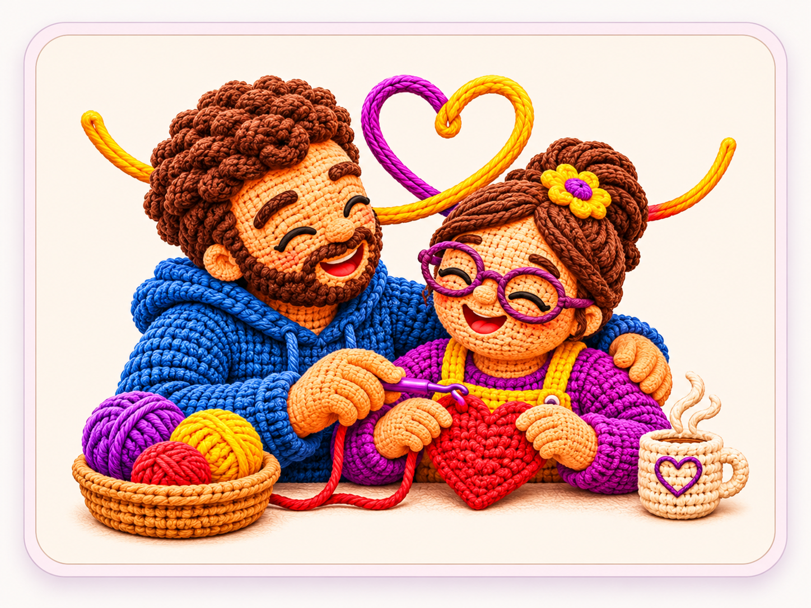

Vida real
reconhecer que cada pessoa tem uma trajetória, necessidades e responsabilidades próprias.
O trabalho se tece coletivamente.
A Novelo surge da percepção de que trabalho, cuidado, acessibilidade e condições de vida costumam aparecer tarde demais nas relações profissionais. Quando essas informações ficam invisíveis, oportunidades promissoras se perdem e vínculos podem começar já desalinhados.
A proposta parte da vida real para organizar melhor esse encontro. Em vez de pedir que a pessoa se adapte silenciosamente à vaga, a plataforma busca tornar visíveis, desde o início, as condições que tornam uma oportunidade possível, respeitosa e sustentável para todos os lados.

O nome Novelo reúne a ideia de um novelo de fios e a expressão novo elo.
A marca representa trajetórias diferentes que se encontram para construir possibilidades compartilhadas. O fio multicolorido simboliza diversidade, continuidade e conexão.
Um novelo é formado por um único fio enrolado, que pode percorrer diferentes caminhos e criar inúmeras possibilidades. Quando está bem organizado, esse fio pode ser desenrolado e utilizado com facilidade. Mas, quando é puxado sem cuidado ou perde sua organização, pode se embaraçar e formar nós difíceis de desfazer.
Essa imagem também ajuda a explicar o funcionamento da plataforma.
Quando as condições de uma vaga estão desorganizadas ou escondidas, o encontro entre profissionais e empresas pode se embaraçar. Organizar essas informações antes da conexão ajuda a formar elos mais sustentáveis.
A Novelo propõe que essa organização seja feita dos dois lados, respeitando aquilo que cada participante deseja e pode oferecer.
A metáfora do fio não é apenas uma escolha estética. Ela orienta a maneira como a Novelo pretende organizar informações, respeitar trajetórias e construir novas oportunidades.
reconhecer que cada pessoa tem uma trajetória, necessidades e responsabilidades próprias.
aproximar competências profissionais de oportunidades efetivamente compatíveis.
reconhecer que conciliar trabalho e cuidado não deve ser uma responsabilidade exclusivamente individual.
A Novelo orienta seu desenvolvimento por seis valores.
Esses valores precisam aparecer nas funcionalidades, não apenas na comunicação da marca.
reconhecer a importância das relações de apoio na vida e no trabalho.
permitir que profissionais e empresas participem das decisões de compatibilidade.
garantir liberdade para definir preferências, restringir contatos e controlar informações pessoais.
reduzir barreiras que dificultam a participação em processos seletivos.
valorizar competências sem transformar circunstâncias pessoais em critérios de exclusão.
proteger dados desde a concepção da plataforma, de acordo com os princípios da LGPD.
A Novelo possui ambientes específicos para pessoas candidatas, empresas e administração. Seu funcionamento combina perfis profissionais, condições de trabalho, compatibilidade e interesse mútuo.
Antes de olhar os ambientes do sistema, vale reunir as três ideias que estruturam a experiência da Novelo. Elas aparecem em momentos diferentes do site, mas fazem parte de uma mesma lógica.
É o espaço em que a pessoa candidata registra aquilo que precisa para que uma oportunidade funcione na vida real: dias e horários disponíveis, deslocamento, acessibilidade, benefícios, assistências e informações opcionais relacionadas ao cuidado.
É a forma como cada vaga reúne, do lado da empresa, as condições concretas de trabalho: jornada, flexibilidade, acessibilidade, benefícios, apoios e compromissos que tornam a oportunidade mais transparente.
É a conexão possível entre o que a pessoa precisa e o que a empresa oferece. Em vez de um encaixe abstrato, a Novelo procura vínculos mais sustentáveis, baseados em compatibilidade, clareza e compromisso.
criação de uma conta individual para administrar informações profissionais, preferências e oportunidades.
configuração da área de atuação, nível de experiência, formação, competências, cidade, pretensão salarial, resumo profissional e currículo.
espaço que reúne as condições consideradas importantes para a pessoa aceitar uma oportunidade. Inclui dias e horários disponíveis, modalidade de trabalho, flexibilidade, limite de deslocamento, necessidades de acessibilidade, benefícios e assistências desejados. Também permite informar, de maneira opcional, circunstâncias relacionadas às responsabilidades de cuidado. A empresa não recebe os motivos pessoais dessas preferências, apenas as informações necessárias à conexão profissional.
seleção dos setores e portes de empresas permitidos, bloqueio de organizações, autorização de compartilhamento e controle da visibilidade das informações.
área privada para consultar e atualizar o cadastro, a Trama da Vida, o currículo e as configurações pessoais. Não há perfil público nem acesso das empresas ao banco geral de pessoas candidatas.
apresentação de vagas em cartões, com informações sobre a empresa, condições oferecidas e indicadores de compatibilidade. A pessoa pode consultar os detalhes, demonstrar interesse por meio da ação Tecer Elo ou seguir para outra oportunidade.
acompanhamento das oportunidades de interesse e das conexões estabelecidas com empresas.
comunicação entre candidata e empresa após o interesse mútuo, com acompanhamento de entrevistas, mensagens e demais etapas do processo seletivo.
recurso opcional para avaliar a clareza das informações, a comunicação, a organização do processo e o respeito às condições declaradas.
apresentação profissional opcional em áudio de até 30 segundos. A pessoa pode gravar, ouvir, substituir ou remover sua apresentação. O áudio não influencia a pontuação e seu compartilhamento depende de autorização.
avaliações opcionais inspiradas no modelo Big Five, com versões rápida e completa, voltadas ao autoconhecimento profissional. Seus resultados não são critérios automáticos de exclusão.
possibilidade de utilizar uma fotografia própria ou criar um avatar personalizado com a identidade visual da marca, sem obrigatoriedade de exposição da imagem pessoal.
suspensão temporária da participação em novas correspondências, preservando cadastro, preferências e informações para posterior retomada, sem penalidade.
acompanhamento de novos elos, mensagens, entrevistas, atualizações e lembretes, com possibilidade de configurar os canais de comunicação.
administração dos dados pessoais, consentimentos, empresas bloqueadas, histórico de acessos, preferências de comunicação e solicitações relacionadas aos direitos da pessoa titular.
espaço para esclarecer dúvidas sobre a plataforma, suas regras, processos seletivos e proteção de dados.
As empresas também possuem um espaço próprio, com funcionalidades para:
identificação da organização, CNPJ, setor econômico, porte, localização e contato de recursos humanos.
conferência institucional antes da participação nos processos de correspondência.
criação de oportunidades com área profissional, requisitos, níveis aceitos, localização, remuneração e competências desejadas.
configuração integrada das condições oferecidas em cada vaga, incluindo jornada e flexibilidade; acessibilidade; benefícios e assistências; apoio ao cuidado; e compromissos da empresa.
definição dos requisitos profissionais e do percentual mínimo de correspondência de competências.
manifestação de interesse por pessoas compatíveis e continuidade do contato somente quando houver reciprocidade.
comunicação com participantes conectadas e organização das etapas de recrutamento.
avisos sobre correspondências, interesses recebidos, mensagens e mudanças nos processos seletivos.
recebimento de devolutivas que ajudem a identificar melhorias necessárias na comunicação e no recrutamento.
reconhecimentos por compromissos e práticas verificáveis relacionados à acessibilidade, transparência, cuidado, proteção de dados e melhoria das condições de trabalho.
Considera área de atuação, nível, competências, localização e remuneração.
Compara as preferências da Trama da Vida às condições informadas no Novelo da Vida Real, incluindo jornada, flexibilidade, acessibilidade, benefícios e assistências.
O aplicativo permite que a pessoa identifique quais condições correspondem às suas preferências e quais precisam de atenção antes de aceitar uma oportunidade. O Novo Elo se concretiza quando existe interesse mútuo.
A Novelo utiliza elementos de gamificação para incentivar compromissos coletivos, sem transformar empresas em concorrentes por pontos ou posições.
Os badges representam práticas verificáveis e melhorias realizadas pelas organizações.
clareza das informações sobre vagas e condições de trabalho.
medidas de acessibilidade e eliminação de barreiras.
práticas de conciliação e apoio às responsabilidades de cuidado.
acolhimento de avaliações e realização de melhorias.
participação em práticas de acompanhamento e retorno ao trabalho.
observância dos compromissos de proteção de dados estabelecidos pela plataforma.
Os badges não formam rankings. As empresas podem seguir trilhas de melhoria, registrar compromissos e compartilhar práticas que contribuam para a evolução coletiva.
A concessão dos reconhecimentos depende de critérios transparentes, evidências e revisão. O cumprimento de obrigações legais não deve ser apresentado como vantagem extraordinária.
O ambiente administrativo reúne as funções de governança da plataforma:
o cadastro principal não exige informações pessoais desnecessárias, como idade, estado civil, número de filhos, CPF ou fotografia.
o compartilhamento de informações depende de uma escolha expressa e informada.
cada pessoa administra suas preferências, pode pausar o currículo, revogar autorizações e solicitar a exclusão dos dados.
empresas não possuem acesso irrestrito a um banco geral de pessoas candidatas.
as informações de contato são disponibilizadas nas condições autorizadas, após interesse mútuo.
condições pessoais, informações relacionadas ao cuidado e necessidades de acessibilidade são utilizadas somente para as finalidades informadas, sem exposição desnecessária aos recrutadores.
fotografias, avatares e apresentações em áudio não são requisitos de participação nem modificam a pontuação.
os acessos às informações profissionais devem ser registrados para permitir acompanhamento e auditoria.
autenticação individual, armazenamento privado, permissões específicas e procedimentos de resposta a incidentes.
acesso, correção, revogação de consentimento, eliminação e portabilidade, conforme as condições previstas na legislação.
As empresas assumem compromissos de utilização dos dados exclusivamente para os processos seletivos autorizados, sem repasse indevido ou formação de bancos paralelos.
A Novelo organiza sua contribuição em duas frentes complementares:
conectar pessoas a oportunidades compatíveis, com informações claras sobre requisitos e condições de trabalho.
apoiar o acompanhamento de pessoas que regressam de licenças e afastamentos, com registro de condições, compromissos, solicitações de ajustes e revisões.
O acompanhamento também pode permitir verificar se as condições informadas durante a seleção correspondem à experiência vivida após a contratação.
A proposta reconhece que permanecer no emprego não depende apenas da decisão individual. Também envolve a organização do trabalho e a capacidade das empresas de assumir compromissos.
A Novelo reúne, em uma mesma proposta, tecnologia de recrutamento, autonomia profissional, transparência das condições de trabalho e proteção de dados.
Sua relação com a Política Nacional de Cuidados está na possibilidade de contribuir para a compatibilização entre trabalho remunerado e responsabilidades de cuidado, envolvendo também as empresas nessa construção.
A plataforma não substitui serviços públicos, políticas de cuidado ou obrigações trabalhistas. Ela oferece instrumentos para tornar mais claras as condições de participação profissional e apoiar relações de trabalho mais sustentáveis.
A Novelo parte de uma ideia simples: para construir um elo, não basta encontrar duas pontas. É preciso compreender como elas podem se conectar sem que alguém tenha de assumir sozinho todo o esforço.
Para que o trabalho possível, a vida real e o cuidado compartilhado façam parte do mesmo fio.
Voltar ao início ↑